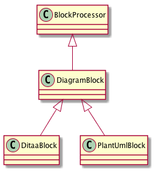

= Dokument Titel == Kapitel === Unterkapitel **bold** *italic* http://blog.schauderhaft.de http://blog.schauderhaft.de[Mein Blog] * list element
twitter tagconference tagtalk tag
inspector-stylesheet:1
span.element {
text-align: center;
display: table-cell;
}
Dokumentation & Slides mit AsciiDoc
und Git, Gradle und Reveal.js
Jens Schauder
Java Entwickler
Clean Code Fanatic
JUG Organizer

Vater, Spieler, Läufer, Boulderer
Once upon a time …
test
Get This In Footer
Oder im "architecture" Ordner
Wer hat das Problem mit seinem Java Source Code?
Versionsverwaltung!
Und was ist mit Tee Diff?
Ein Leben ohne Mops Diffs ist möglich, aber sinnlos.
Textbasiert!
Plain Ascii
Ein bisschen zu plain
Markdown
Bekannt von Stackoverflow
Ziemlich plain
Nur einfache Formattierung
DocBook
Entworfen für technische Dokumentation
Aber XML!
AsciiDoc
Einfach zu schreiben.
Zielformate
HTML5, EPUB3, PDF, DocBook 5 und mehr
z.B. reveal.js
Sie baden gerade ihre Hände drin
Tools
DocGist: Onlineeditor
Github Pages
RestDoc: REST Api Doku aus Tests
Plugins für diverse Editoren
Code Beispiele
Images
image::palmolive.jpg[background, size=cover]
Uml Diagrams
[plantuml, diagram-classes, png] ---- class BlockProcessor class DiagramBlock class DitaaBlock class PlantUmlBlock BlockProcessor <|-- DiagramBlock DiagramBlock <|-- DitaaBlock DiagramBlock <|-- PlantUmlBlock ----
Uml Ergebnis

Die offensichtliche Frage
Das ist ja ganz nett, für kleine Diagramme, aber was ist mit meinem 500 Klassen Architekturdiagramm?
— Imaginary Author
Die offensichtliche Antwort
In ein Bild konvertieren, nach Bedarf skalieren, nach /dev/null verschieben
und von dort aus einfügen.
— Jens Schauder
Admonitions
NOTE: Dies ist eine Notiz
| Dies ist eine Notiz |
Includes
include::somefile.ad[]
Fügt den Inhalt einer Datei ein.
Source Code
[source,ruby] ---- require 'sinatra' get '/hi' do "Hello World!" end ----
Source Code Result
require 'sinatra'
get '/hi' do
"Hello World!"
endSource Code via include
[source,groovy] .Sample.groovy ---- include::Sample.groovy[tags=helloMethod] ----
Fügt den Teil zwischen
// tag::helloMethod[]
und
// end::helloMethod[]
ein.
Variablen ersetzen
:sayMyName: Jens Schauder
{sayMyName}
Jens Schauder
Variable aus dem Buildscript
{conference}
Javaland 2017
Conditional content
ifdef::venue[{venue}]
ifndef::venue[]
{conference}
endif::venue[]
Javaland 2017
All together now!
Wir haben Asciidoc Quellen
Wir haben Includes
Quellcode
Bilder
CSS
Standard Content
Versionsverwaltet (in Git)
Wie bekommen wir jetzt ein …
PDF?
HTML Dokument?
Reveal.js Dokument?
Wir brauchen ein Buildtool!
Gradle
Ich benutze Gradle, weil ..
es ist flexibler
weniger wortreich
weil es einen netten Migrationspfad vom Customskript zum Plugin gibt.
nur so.
Geht alles bestimmt auch mit Maven
Der Plan
Code compilieren und testen
Resourcen einsammeln (CSS, JS-Bibliotheken …)
run asciidoctor to produce the outputs you want
Compilieren und testen
apply plugin: 'java'ausführen mit
./gradlew testDas war einfach
Asciidoctor → HTML5 (1/2)
plugins {
id 'org.asciidoctor.convert' version '1.5.3'
}
apply plugin: 'org.asciidoctor.convert'
asciidoctorj {version = '1.5.4'}Asciidoctor → HTML5 (2/2)
asciidoctor {
attributes \
'build-gradle': file('build.gradle'),
'sourcedir': project.sourceSets.main.java.srcDirs[0],
'endpoint-url': 'http://example.org',
'source-highlighter': 'coderay',
'imagesdir': 'images',
'toc': 'left',
'icons': 'font',
'setanchors': '',
'idprefix': '',
'idseparator': '-',
'docinfo1': ''
}Ausführen
./gradlew asciidoctorViele Attribute aber, geht noch
Asciidoctor → Reveal.js
buildscript {
dependencies {
classpath 'org.ysb33r.gradle:vfs-gradle-plugin:1.0-beta8'
classpath 'commons-httpclient:commons-httpclient:3.1'
}
}
plugins {
id 'org.asciidoctor.convert' version '1.5.3'
id 'com.github.jruby-gradle.base' version '1.2.1'
}
apply plugin: 'com.github.jruby-gradle.base'
apply plugin: 'org.ysb33r.vfs'
apply plugin: 'java'
apply plugin: 'org.asciidoctor.convert'
version = '1.0.0-SNAPSHOT'
ext {
revealjsVersion = '3.2.0'
asciidoctorBackendVersion = 'master'
downloadDir = new File(buildDir,'download')
templateDir = new File(downloadDir,'templates')
revealjsDir = new File(downloadDir,'reveal.js')
}
repositories {
jcenter()
}
dependencies {
gems 'rubygems:slim:3.0.6'
gems 'rubygems:thread_safe:0.3.5'
}
task download << {
mkdir downloadDir
vfs {
cp "zip:https://github.com/asciidoctor/asciidoctor-reveal.js/archive/${asciidoctorBackendVersion}.zip!asciidoctor-reveal.js-${asciidoctorBackendVersion}",
templateDir, recursive:true, overwrite:true
cp "zip:https://github.com/hakimel/reveal.js/archive/${revealjsVersion}.zip!reveal.js-${revealjsVersion}",
revealjsDir, recursive:true, overwrite:true
}
}
download {
description "Download extra revealjs resources"
outputs.dir templateDir
outputs.dir revealjsDir
}
asciidoctorj {
version = '1.5.4'
}
asciidoctor {
dependsOn jrubyPrepare, download
sources {
include 'example-deck.adoc'
}
resources {
from (sourceDir) {
include 'images/**'
}
from (downloadDir) {
include 'reveal.js/**'
}
}
backends 'revealjs'
attributes \
'build-gradle': file('build.gradle'),
'sourcedir': project.sourceSets.main.java.srcDirs[0],
'endpoint-url': 'http://example.org',
'source-highlighter': 'coderay',
'imagesdir': './images',
'toc': 'left',
'icons': 'font',
'setanchors': '',
'idprefix': 'slide-',
'idseparator': '-',
'docinfo1': '',
'revealjs_theme': 'black',
'revealjs_transition': 'linear',
'revealjs_history': 'true',
'revealjs_slideNumber': 'true'
options template_dirs: [new File(templateDir,'templates/slim').absolutePath]
}"uiuiuiui Tiffy"
Mein perönlicher Build (1/2)
compilieren & testen
ruby aufsetzen
asciidoctor-reveal plugin runterladen
reveal.js runterladen
Stylesheets (SCSSS) kompilieren
Resourcen (Bilder) kopieren
Mein perönlicher Build (2/2)
asciidoctor Dateien konvertieren
Ergebnisse publizieren.
Das meiste ist in jedem Vortrag gleich
Ein eigenes Plugin
Warum ist das so umständlich?
Viele verschiedene Technologien.
Javascript Ökosystem ist ziemlich unreif.
⇒ Keine Standardstruktur
⇒ Abhängigkeiten nicht Standardisiert (Web-Jars???)
Reveal.js
Ein Präsentationstool basierend auf JS
Eine Präsentation ist ein HTML Dokument
Java Script kümmert sich um Folienübergänge
CSS um das Styling
Einfach zu verteilen
Features
Übergänge
Formattierung
Code Highlighting
Speaker Notes
Media
Overview
Aber HTML
seriously?
AsciiDoc FTW!
Fast nur noch Inhalt im Dokument
Ein Stylesheet to rule them all.
Tips und Tricks
Speaker Notes
[NOTE.speaker]
====
Speaker notes
====Background Image
image::samson.jpg[background, size=cover]section[data-background-size] h2 {
background: rgba($color-secondary-2, 0.5);
box-shadow: 0 0 5px rgba($color-primary-1, 0.5);
text-shadow: none;
}UML als Background
image::diagram-classes.png[background, size=contain]
[plantuml, diagram-classes, png]
----
class BlockProcessor
class WhatEver
----Quellen
clear-glass-light-bulb https://www.pexels.com/photo/clear-glass-light-bulb-75427/
Was ist mit Tee aus der Giotto Werbung
Mops von existentist - Flickr, CC BY 2.0, https://commons.wikimedia.org/w/index.php?curid=2960791
Sesamstrasse von Fabula Filmpuppen - http://www.fabula-filmpuppen.de/Sesamstrasse054.jpg
{kind=link}